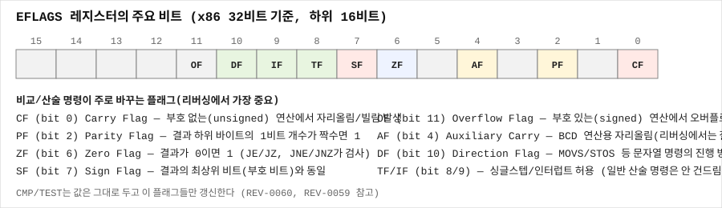

CMP: 값을 바꾸지 않는 SUB 비교
한 줄 요약
CMP는 두 오퍼랜드를 뺄셈(SUB)하되 결과를 저장하지 않고 플래그만 세팅하는 명령어로, 이후에 오는 Jcc(조건부 분기)와 짝을 이루어 if/while/for 등 모든 비교 기반 분기의 기초가 된다.
언제 검색해야 하나
cmp eax, 10다음에jg,jl,je같은 분기가 오는 코드를 해석해야 할 때cmp와test의 차이가 헷갈릴 때- 부호 있는 비교(
jg/jl)와 부호 없는 비교(ja/jb)가 왜 다른 명령어 쌍으로 나뉘어 있는지 이해하고 싶을 때 - 반복문(
for,while)의 종료 조건이 어셈블리에서 어떻게 표현되는지 알고 싶을 때
핵심 개념
Intel 문법과 오퍼랜드
CMP dest, src- 내부적으로
dest - src를 계산하지만, 그 결과를 dest에 저장하지 않는다. 오직 플래그만 갱신된다.

dest는 레지스터/메모리,src는 레지스터/메모리/즉시값. 메모리-메모리 조합 불가.- 예:
cmp eax, 10,cmp eax, ebx,cmp byte ptr [rbp-1], 0. - "값을 바꾸지 않는 SUB"라는 표현 그대로,
SUB eax, ebx와 똑같은 뺄셈을 하고 똑같은 플래그를 세팅하지만eax는 원래 값 그대로 남는다.
플래그 변화
dest - src를 계산했을 때와 동일하게 모든 산술 플래그가 세팅된다:
- ZF:
dest - src == 0(즉dest == src)이면 1 - SF: 뺄셈 결과의 최상위 비트가 1이면 1 (결과가 음수로 보이면)
- CF: 부호 없는(unsigned) 뺄셈에서 빌림(borrow)이 발생했으면 1 — 즉
dest < src(unsigned 기준) - OF: 부호 있는(signed) 뺄셈에서 오버플로가 발생했으면 1
- PF: 결과 하위 1바이트의 1비트 개수가 짝수면 1
- AF: BCD 연산용, 일반 리버싱에서는 무시
CMP는 TEST와 달리 CF와 OF를 항상 0으로 만들지 않고 실제 뺄셈 결과에 따라 세팅한다. 이 차이 때문에 CMP는 TEST가 할 수 없는 "크기 비교"(더 큰지, 더 작은지)를 할 수 있다.
CMP + Jcc — signed 비교와 unsigned 비교
CMP dest, src 이후에 오는 조건부 분기(Jcc)는 어떤 플래그 조합을 보느냐에 따라 signed용과 unsigned용으로 나뉜다. 이게 x86에서 가장 자주 헷갈리는 부분이므로 표로 정리한다.
signed 비교 (SF, OF, ZF 사용 — 값을 부호 있는 정수로 해석):
| 분기 | 조건(의미) | 플래그 조건 |
|---|---|---|
JE/JZ | dest == src | ZF=1 |
JNE/JNZ | dest != src | ZF=0 |
JG/JNLE | dest > src (signed) | ZF=0 그리고 SF=OF |
JGE/JNL | dest >= src (signed) | SF=OF |
JL/JNGE | dest < src (signed) | SF≠OF |
JLE/JNG | dest <= src (signed) | ZF=1 또는 SF≠OF |
unsigned 비교 (CF, ZF 사용 — 값을 부호 없는 정수로 해석):
| 분기 | 조건(의미) | 플래그 조건 |
|---|---|---|
JA/JNBE | dest > src (unsigned) | CF=0 그리고 ZF=0 |
JAE/JNB | dest >= src (unsigned) | CF=0 |
JB/JNAE | dest < src (unsigned) | CF=1 |
JBE/JNA | dest <= src (unsigned) | CF=1 또는 ZF=1 |
같은 CMP 결과라도 어떤 Jcc를 쓰느냐에 따라 완전히 다른 의미가 된다. 예를 들어 eax = 0xFFFFFFFF(signed로 -1, unsigned로 4294967295)와 ebx = 1을 cmp eax, ebx로 비교하면: signed로는 eax(-1) < ebx(1)이라 JL이 분기하지만, unsigned로는 eax(4294967295) > ebx(1)이라 JA가 분기한다. 어떤 Jcc가 쓰였는지를 보면 그 값이 signed로 취급되는지 unsigned로 취급되는지 역으로 알 수 있다 — 이건 리버싱에서 타입을 추론하는 핵심 단서 중 하나다.
CMP vs TEST — 언제 어느 것이 쓰이는가
CMP | TEST | |
|---|---|---|
| 내부 연산 | 뺄셈 (dest - src) | AND (dest AND src) |
| CF/OF | 실제 값에 따라 세팅됨 | 항상 0 |
| 할 수 있는 것 | 임의의 두 값 사이의 대소/동등 비교, unsigned/signed 순서 비교 전부 | 오직 "0인가", "특정 비트가 켜져 있나" |
| 대표 용도 | cmp eax, 10; jg (배열 경계, 반복문 종료조건, 임의 값 비교) | test eax, eax; jz (NULL/0 체크, 비트 플래그 확인) |
레지스터를 상수 0과 비교하는 특수한 경우에는 컴파일러가 CMP eax, 0 대신 더 짧은 TEST eax, eax를 쓰지만, 0이 아닌 값과 비교하거나 unsigned 순서 비교가 필요할 때는 반드시 CMP가 쓰인다.
신호 있음/없음(signed/unsigned) 관점
CMP는 뺄셈을 그대로 수행하므로 결과 비트 패턴은 signed든 unsigned든 동일하다. 다만 그 결과를 "크다/작다"로 해석하는 것은 뒤에 오는 Jcc가 결정한다. 즉 CMP 자체는 signed/unsigned를 구분하지 않고, 플래그 해석(Jcc 선택)에서 구분이 생긴다. 이는 x86 아키텍처가 부호 있는/없는 정수를 별도의 산술 회로 없이 같은 뺄셈기로 처리하고, 그 결과를 다르게 "읽는" 영리한 설계라고 이해하면 된다.
스택/RSP/RIP 변화
없음.
화면/코드에서 보이는 징후
cmp eax, 10+jg/jl/jle/jge— signed 범위 비교 (배열 인덱스, 카운터 등)cmp eax, 10+ja/jb/jae/jbe— unsigned 범위 비교 (크기, 길이, 부호 없는 카운터)cmp eax, ebx+je/jne— 정확한 동등 비교 (signed/unsigned 무관하게 동일하게 동작)- 반복문 끝의
cmp ecx, len+jl loop_start— 전형적인for루프 종료 조건 cmp다음 아무 분기 없이 다른 명령이 오는 경우 — 드물지만SETcc나CMOVcc로 플래그를 소비하는 경우도 있음(예정 문서 참고)
가장 먼저 할 것
CMP뒤에 오는 Jcc가 signed 계열인지 unsigned 계열인지부터 구분- 오퍼랜드 중 상수가 있으면 그 값을 확인 (배열 크기, 매직 넘버, 비교 임계값 등)
- signed/unsigned 구분으로 그 변수의 실제 타입(
intvsunsigned int/size_t)을 추론
단계별 절차
1) signed 범위 비교 인식
cmp eax, 100
jg too_big ; eax > 100 (signed) 이면 분기→ if (x > 100) goto too_big; (x는 int)
2) unsigned 범위 비교 인식 (버퍼 크기/길이 검사에 흔함)
cmp eax, ebx
jae out_of_bounds ; eax >= ebx (unsigned) 이면 분기→ if (index >= size) goto out_of_bounds; (index/size는 unsigned, size_t 계열일 가능성 높음)
3) 반복문 종료 조건 인식
loop_top:
; ... 루프 본문 ...
inc ecx
cmp ecx, [len]
jl loop_top→ for (int i = 0; i < len; i++) { ... }
4) signed/unsigned 혼동 코드 찾기
mov eax, [count] ; count가 int(signed)라고 가정
cmp eax, 0
jl negative_error ; count < 0 (signed) 검사이런 패턴이 있다면 count가 signed 타입이며, 코드가 음수 입력을 방어적으로 걸러낸다는 뜻이다. 만약 이 검사가 빠져 있고 이후 cmp가 ja/jb(unsigned)만 쓰인다면, 음수 입력이 거대한 unsigned 값으로 취급되어 경계 검사를 우회할 수 있는 정수 취약점을 의심할 수 있다.
명령어/단축키
- IDA:
cmp+Jcc쌍을 그래프 뷰(스페이스바)로 보면 초록/빨강 화살표로 분기 방향(참/거짓)이 명확히 표시된다. - x64dbg: 명령어 실행 후 플래그 창(ZF, SF, CF, OF)을 확인하며 각 Jcc가 어떤 조합을 보는지 직접 검증할 수 있다.
출력 해석
- IDA/Ghidra 디컴파일러는
cmp+Jcc쌍을 거의 항상if (a > b),if (a == b),for (...)같은 고수준 C 구문으로 정확히 복원한다. - 디컴파일된 코드에서 비교 연산자가
</>(signed)로 보이는지, 아니면 변수 타입이unsigned/uint/size_t로 표시되어 있는지 보면, 원본 Jcc가 signed 계열이었는지 unsigned 계열이었는지 역으로 짐작할 수 있다. - Ghidra는 특히 변수 타입 추론에 unsigned/signed Jcc 선택을 적극적으로 활용하므로, 디스어셈블리 원문에서 직접 Jcc 종류를 확인하는 습관이 타입 추론이 잘못된 경우를 잡아내는 데 유용하다.
흔한 실수
cmp가 값을 바꾼다고 착각하는 것 —CMP도TEST처럼 오퍼랜드를 절대 수정하지 않는다.SUB와 플래그 계산 로직은 같지만 결과 저장이 없다는 점만 다르다.- signed Jcc(
JG/JL)와 unsigned Jcc(JA/JB)를 같은 것으로 취급하는 것 — 니모닉 철자가 비슷해서(G/L vs A/B) 헷갈리기 쉽지만, 음수가 섞인 값에서는 완전히 다른 분기 결과를 낸다. cmp eax, 0과test eax, eax가 항상 100% 같다고 확대 해석해서,cmp eax, 5도test eax, 5와 같다고 착각하는 것 — 0과의 비교에서만 우연히 동등한 것이지, 일반적으로 CMP와 TEST는 전혀 다른 연산이다.cmp만 보고 바로 다음 줄이 분기라고 단정하는 것 — 컴파일러 최적화로cmp와Jcc사이에 다른 명령어가 끼어들거나,setcc/cmovcc처럼 분기 없이 플래그를 소비하는 명령어가 올 수도 있다.
막혔을 때 다음 체크
- Jcc 종류가 signed인지 unsigned인지 헷갈리면 → 이 문서의 표를 다시 확인 (G/L=signed, A/B=unsigned).
- 비교 대상 변수의 실제 타입을 모르겠다면 → 어떤 Jcc가 쓰였는지 보고 역으로 타입을 추론 (unsigned Jcc가 쓰였다면 그 변수는
unsigned/size_t계열일 가능성이 높음). - 정수 오버플로/언더플로 취약점을 찾고 있다면 → signed 검사(
jl음수 체크)가 없이 unsigned 비교(ja/jb)만 있는 경계 검사 코드를 중점적으로 살펴본다.
미니 예제
예제 1 — signed 비교 (int 변수)
int x = get_value();
if (x > 100) { error(); }call get_value
cmp eax, 64h
jg error예제 2 — unsigned 비교 (버퍼 크기 검사)
size_t idx = get_index();
if (idx >= buf_size) { error(); }mov eax, [idx]
cmp eax, [buf_size]
jae error예제 3 — 반복문 종료 조건
for (int i = 0; i < 10; i++) { arr[i] = 0; }xor ecx, ecx
loop_top:
mov dword ptr [rdi+rcx*4], 0
inc ecx
cmp ecx, 0Ah
jl loop_top예제 4 — signed/unsigned가 다르게 동작하는 예
mov eax, 0FFFFFFFFh ; signed -1, unsigned 4294967295
cmp eax, 1
jl is_less_signed ; signed 비교: -1 < 1 이므로 분기함
ja is_greater_unsigned ; unsigned 비교: 4294967295 > 1 이므로 이쪽도 (다른 실행 경로에서) 분기함관련 글
- REV-0059 — TEST: 값을 바꾸지 않는 AND 비교
- REV-0055 — AND: 마스크와 비트 제거
- REV-0067 — JE와 JZ: ZF가 1일 때 분기
- REV-0068 — JNE와 JNZ: ZF가 0일 때 분기
- REV-0069 — JG JGE JL JLE: Signed 비교 분기
- REV-0070 — JA JAE JB JBE: Unsigned 비교 분기
출처/검증
- CMP 명령어의 오퍼랜드/플래그 동작: Intel 64 and IA-32 Architectures Software Developer's Manual, Volume 2A, "CMP—Compare Two Operands" 섹션 기준 (2026-09-08 검증).
- Jcc 조건-플래그 매핑 표(signed/unsigned): Intel SDM Volume 1, "Jcc—Jump if Condition Is Met" 및 Volume 2A Jcc 명령어 상세 조건 표 기준.